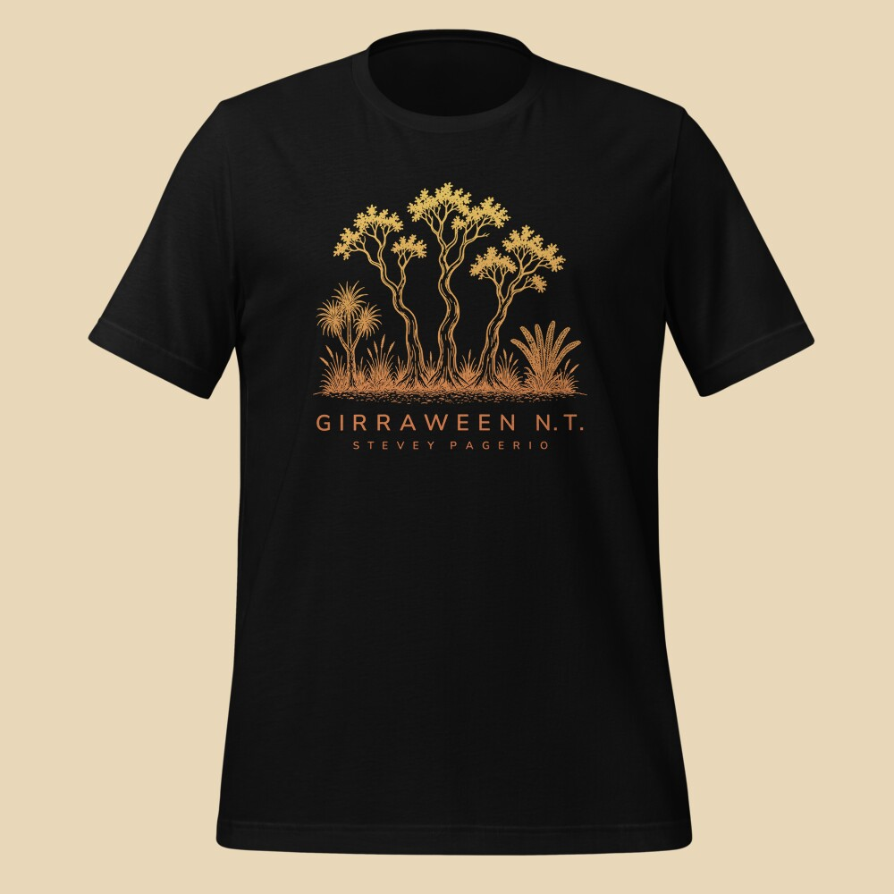
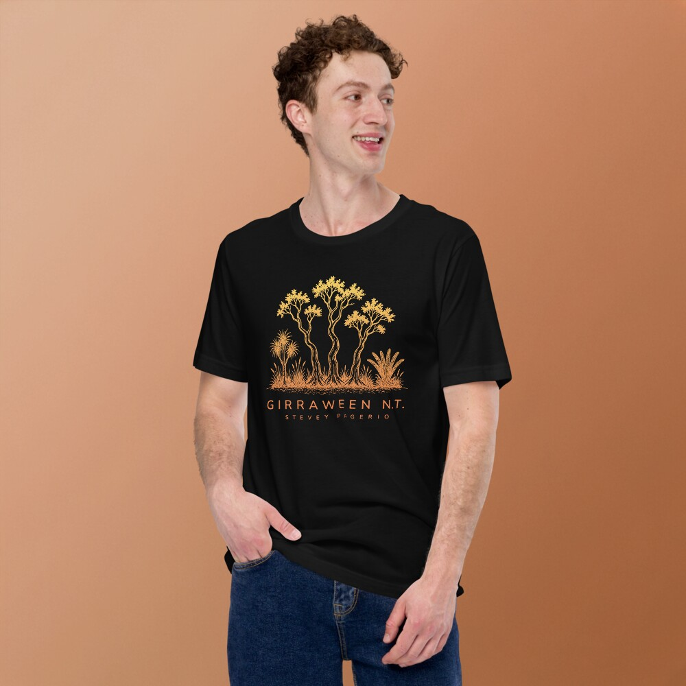
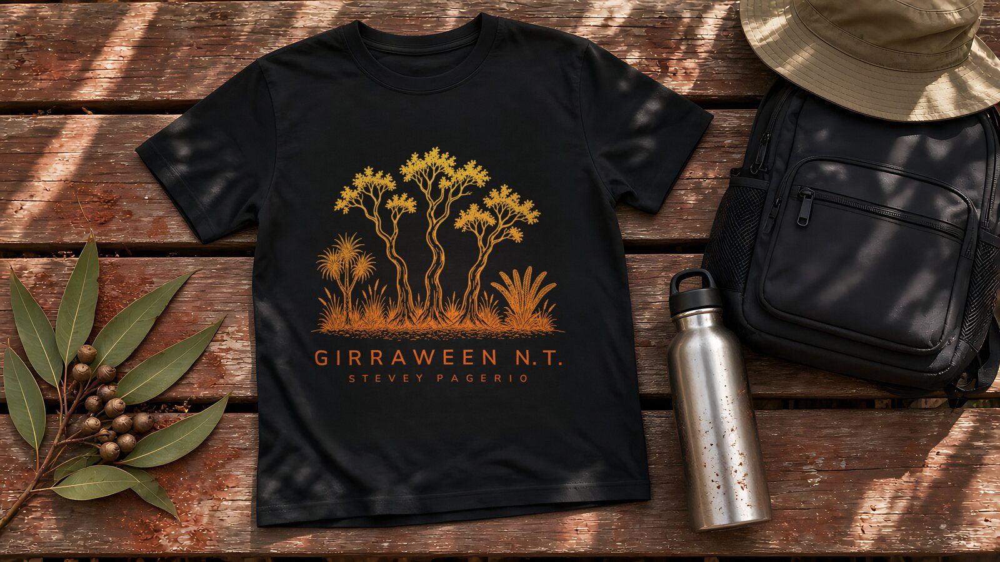
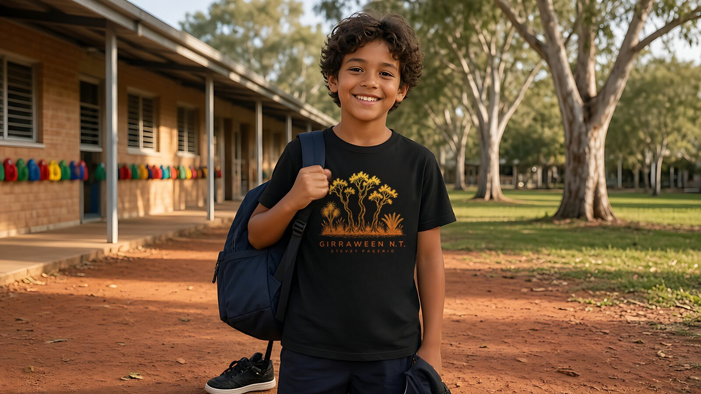
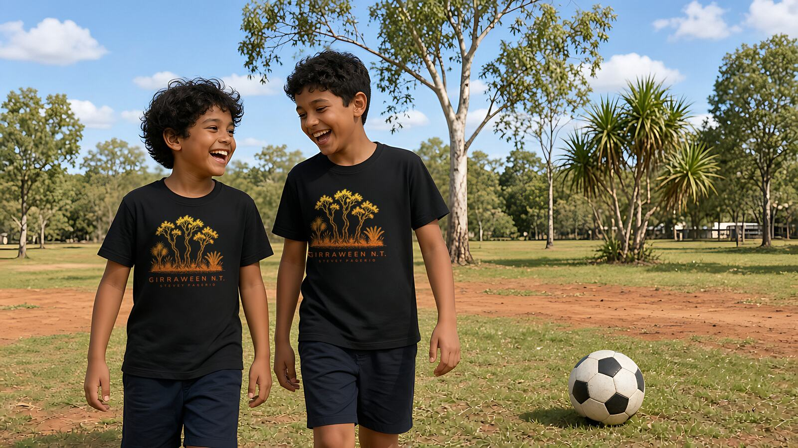
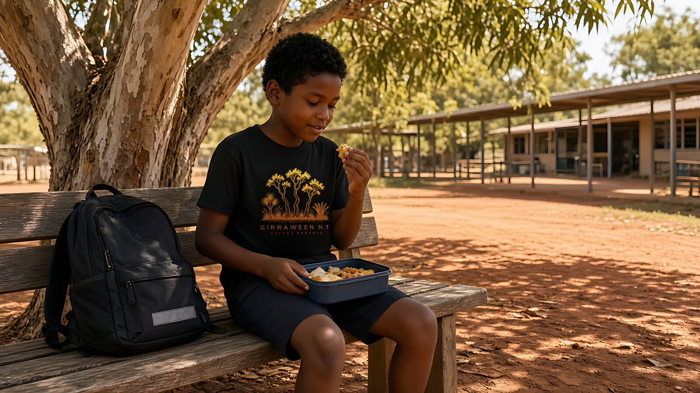

Girraween N.T.
Black tee · yellow-to-orange print
T-SHIRTS · NT
Simple shirts. Clean designs. Colours from red dirt, olive scrub and late-afternoon sandstone.
See shirts

Black tee · yellow-to-orange print




Black kids tee · yellow-to-orange print
This site is a clean start for the T-SHIRTS project. Hosted free on GitHub Pages. Designed here.
Add your email or socials when you are ready.